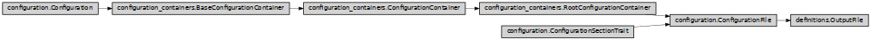

OutputFile
- class ase2sprkkr.output_files.definitions.OutputFile(definition, container=None)[source]
Objects of this class holds datas of an output file
Class hierarchy
Constructor
- __init__(definition, container=None)
Create the container and its members, according to the definition
- unknown_output_file_definition = <OUTPUT FILE None>
- definitions = {'bsf': <module 'ase2sprkkr.output_files.definitions.bsf' from '/home/logik/skola/kkr/ase2sprkkr/src/ase2sprkkr/output_files/definitions/bsf.py'>, 'dos': <module 'ase2sprkkr.output_files.definitions.dos' from '/home/logik/skola/kkr/ase2sprkkr/src/ase2sprkkr/output_files/definitions/dos.py'>, 'spc': <module 'ase2sprkkr.output_files.definitions.spc' from '/home/logik/skola/kkr/ase2sprkkr/src/ase2sprkkr/output_files/definitions/spc.py'>}
- classmethod from_file(filename, first_try=None, try_only=None, unknown=None)[source]
Read SPRKKR output file (DOS, BSF….). The type of content of the output file is guessed from the content, however you can get hint what to try first or force to read only certain file type(s).
- Parameters
filename – The file to read
first_try – List of output file types to be tried first. If it is None, it is guessed from the file extension.
try_only – List of the output file types, that can be read. None mean read any known file type.
unknown – If True, at last, an unknown output file is readed: such file has just parsed header and then one property that holds the rest of the file as text. If False, raise an exception if no known (and allowed) file type is recognized. None means True if try_only is None, False otherwise.